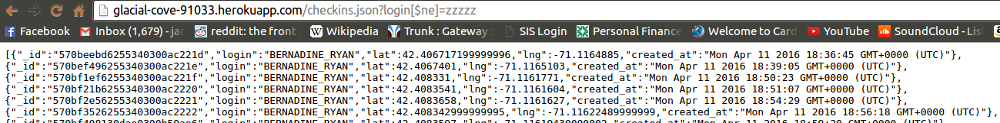
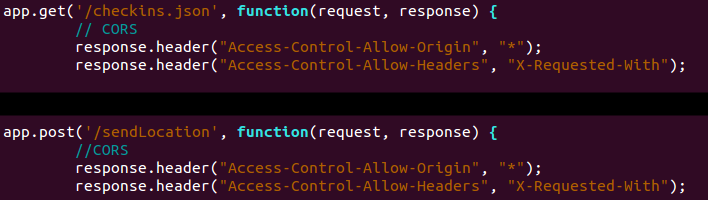

Cross-Site Scripting
- Location: Found on the index checkins page (GET "/" request) after misusing the /sendLocation POST API.
- Severity: High. XSS attacks allow a foreign entity to inject code on your website which will be run by subsequent users. Malicious code can do any number of things, from something as innocuous as changing the background color to red, to running code that parses the users' localstorage and sends data elsewhere, to crashing the server. Avoid at all costs.
- Description: This vulnerability was found while performing black box testing. It was known that the POST /sendLocation request takes in data, and that the index.html page renders that data. Any input to output of this form is vulnerable to XSS without action on the server, so it was the first thing checked. It comes from putting malicious javascript in a field sent to the POST request within script tags, the script will be run on the client's machine when the same data is displayed on the index page. A screenshot is shown in the next section.
- Proof of Vulnerability: To prove this point, the background color was changed to red, and the header section of the site changed to "hacked!". This used the following js code included in a post field, in 2 separate post requests:
login=jacobh4x0r<script>document.body.style.color='red'</script>login=jacobh4x0r<script>document.getElementsByTagName('h1')[0].innerHTML = "Hacked!";</script>
Becomes:

- Resolution: In some way shape or form, the web app must sanitize user input. Many options for this exist, it is suggest using an extra dependency to allow only alphanumeric characters. This is a good option for this website, as diacritical marks are likely not significant due to how the website is only rendered in english. One such dependency is validator.js, which when installed and included in a server executing node js code, can reject non alphanumeric characters, including the script tag by the following pseudocode (as no assumption is made about the language used):
var valid = true;
for(s in requests) { valid = valid && isAlphanumeric(s, 'en-US'); }
if (valid) {
//add data to database, all fields are alphanumeric
}
HTML Injection
- Location: Also found on the index checkins page (GET "/" request) after misusing the /sendLocation POST API
- Severity: Medium. Unlike XSS, at least this inserts HTML elements, which don't immediately run code that can compromise the page's entire integrity. Instead, the user must interact with those malicious elements (like clicking on a link). Still bad, but there's a silver lining.
- Description: This is closely related to the XSS vulnerability, and it comes from the same source. This was the next thing checked during the black box testing phase. Whereas XSS results from injection executable code in the POST /sendLocation request, HTML injection results from valid HTML elements being included in a field in the POST /sendLocation request. When that information is redisplayed when accessing the GET "/" request or navigating to index.html, it poses a security risk. Consider if the element inserted contains a link to a malicious website. Users will click on that link assuming it is deemed safe by this web app, ruining this web app's reputation if it is unsafe. This is why it is particualrly important to avoid this issue for governmental websites, in addition to other sites.
After the user leaves the web site, there is no guarantee the following website is safe, and it is assumed otherwise. There are also other considerations, a malicious user could insert an advertisement that raises that user money (which brings legal concerns). In general, it disrupts the design of the website and can ruin user experience. - Proof of Vulnerability: To prove this point, an image of a beaver was inserted through the POST "/sendLocation" API and viewed with the GET "/" API.
login=jacobh4x0r<img src = 'https://s-media-cache-ak0.pinimg.com/236x/40/dd/f1/40ddf1b4e1defc4f4d47e27d51a2dc59.jpg'>
- Resolution: This can also be resolved by sanitizing user input, the Validator.js dependency from issue #1 could also be used. Another idea is to excape all characters as per HTML standards. This would mean whatever is written in the POST API fields appear verbatim in the GET "/" API. Here is some sample code to do so for the brackets symbols, which would prevent any html tags. However, a dedicated API like the one in section 1 is less work and is suggested. This was conducted using Blackbox texting, so this is only pseudocode:
for(s in requests) {
for(c in s){
if(c == '<') { c = < }
else if(c== '>') { c = > } } }
Exposure of User Data Using Mongo Queries
- Location: Found on the GET "/checkins.json" API.
- Severity: Medium. User data is exposed, which is a different issue for different web apps. It could be High for sites with sensitive data (passwords, credit cards), or medium for sites with non sensitive data (username only). This web app has usernames and coordinates, which on the balance is closer to medium.
- Description: Navigating to the GET "/checkins.json" API requests a query string for the login, and the API will return checkins from the login string provided. However, the server naively gives the user input to mongo to look up, and will pass along any operators. For instance the not equals operator "[$ne]". Thus with that operator mongo will return all of the checkins data if you supply an uncommon login string. This is a security risk for exposing past user information. Although the user could also find this info on the regular "/" GET API, it is an issue here in principle, and because the json returned is much simpler to parse and process. User data should never be exposed like this, especially location data. This was found by examining the source code and determining that mongodb was used unsafely for the Get checkins.json API.
- Proof of Vulnerability: Simply navigate to http://glacial-cove-91033.herokuapp.com/checkins.json?login[$ne]=zzzzz
note that "zzzzz" could be any string that is unlikely to occur. Note how all of the past checkin data is showed to the user:
 - Resolution: Likewise here, never trust user input. The solution to problem #1 is an option here. Since this problem exists specifically with the "[" and "$" characters, validator.js can also be used to blacklist those characters as opposed to whitelisting alphanumeric characters
for (s in requests) { s = blacklist(s, ['[', ']', '$']; }
Naturally, if a different database is used, all characters that allow operations like this should also be blacklisted.
Unsafe Use of Same-Origin-Policy Exception
- Location: Found in the GET "/Checkins API" and the POST "/sendLocation" API.
- Severity: Low. The site can be secure without this to all but 0-day exploits, and removing Same-Origin-Policy comes with the tradeoff of not allowing every web app support natively.
- Description: Normally, websites have the Same Origin Policy in use. This policy states that a web browser will permit scripts in one page to access another page only if both pages come from the same origin. The checkins and sendLocation APIs disable same origin policy so a third party user can checkin and view checkins. However, this also by design opens up all the previously mentioned. Found by examing the source code by these APIs, and implied by blackbox testing as well.
- Proof of Vulnerability: Here, the proof is in the pudding, within the afforementioned GET and POST APIs:

Together they add a same origin policy exception that allows all users to access other users data. - Resolution: Two options to resolve this come to mind. First, the web app could whitelist specific domains to have access to the APIs, this would allow cross use of the web app but would also add a vetting process for the trusted whitelisted domains. Alternatively, the web app could generate and give unique API keys, and require a valid key upon API usage. This key would be tied to a specific user, which also adds recourse if that user attempts to hack the site. Of the two, the second option is suggested as it allows more broad use of the API, also because the whitelist vetting process can be too taxing to do manually.
Generating API codes is part of cryptography and outside the scope of this document, however, assuming a function exists to check if the codes are valid this is implemented simply:
if (request.query.apikey != null && isValidAPIKey(req.query.apikey)) { //normal API code here }
else { response.send("Invalid API Key!"); }